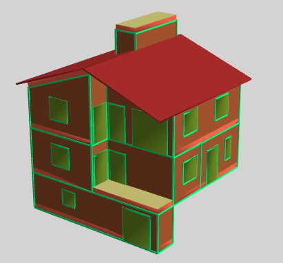
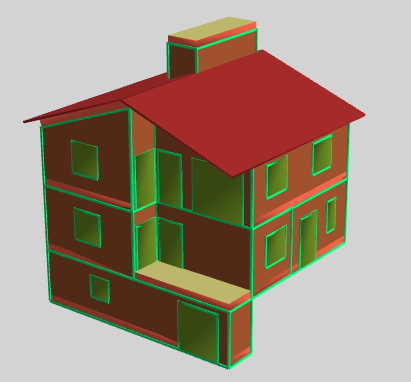
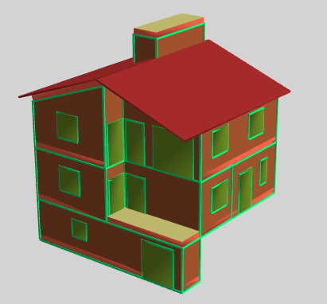
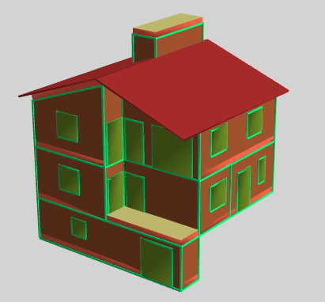

Termodel è un plugin per AutoCAD LT 2024 o superiore (oppure qualsiasi versione di AutoCAD) che, a partire da un disegno schematico realizzato nel CAD, genera automaticamente il modello termico del fabbricato e lo visualizza in 3D.
Il software esporta i dati nel formato XML Nazionale completo, compatibile con i principali programmi di calcolo energetico che supportano questo standard.
Hai domande su Termodel? Ottieni risposte automatiche su funzionamento, caratteristiche e uso: